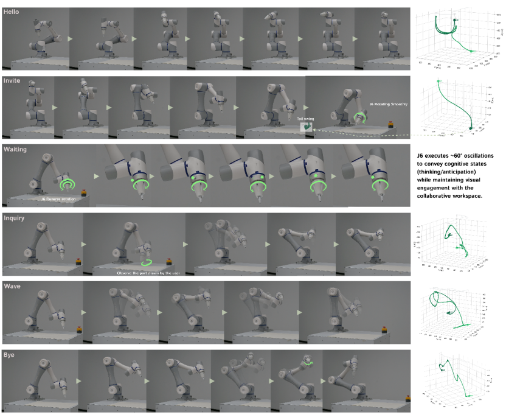
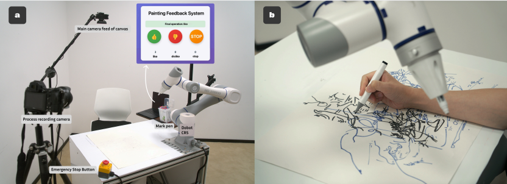

![Transformation from Functional to Expressive Human-Robot Creative Collaboration. The contrast illustrates how expressive robot behaviors (waving, inviting gestures) transform user experience from isolated parallel work ('Just drawing separately...kind of boring') to engaged collaborative partnership ('We’re drawing together!'). The expressive condition demonstrates contextually appropriate behaviors including acknowledgment gestures and spatial coordination that facilitate genuine creative partnership formation.](teaser.jpg)
Human-robot creative collaboration is typically limited by a command-response paradigm where robots act as sophisticated tools rather than genuine partners. While current systems can produce impressive artistic results, they lack the intuitive, adaptive communication—such as subtle gestural cues and responsive rhythms—that characterizes human creative partnerships. This research investigates whether expressive robot behaviors (e.g., social signaling and movement quality) can bridge this gap and foster a deeper sense of partnership.
The authors propose that physical robotic collaboration offers unique opportunities for shared workspace negotiation and real-time coordination that screen-based systems cannot match. By comparing purely functional interactions with socially expressive ones, the study aims to determine how movement-based expression transforms a user's perception of a robot from a mere tool into a creative collaborator.
The primary motivation stems from the need for intercorporeal communication in creative work—an embodied dialogue where collaborators navigate ambiguity and enter "flow states" together. Current robots often master the what of co-creation (the output) but overlook the how (the collaborative process), preventing the formation of relationships built on mutual inspiration and emotional support.
Expressive behaviors serve as a critical mechanism to communicate intent, emotional states, and collaborative readiness. The research is driven by the hypothesis that movement-based expression can establish creative rhythm, provide emotional encouragement during uncertain phases, and signal appreciation, thereby fundamentally altering the human perception of the robotic system.
The system utilizes a Dobot CR5 6-DOF robotic arm equipped with custom brush end-effectors. For the creative output, the authors developed a hybrid generative pipeline using Latent Diffusion Models (Stable Diffusion 1.5 and SDXL) via ComfyUI, which translates semantic or visual inputs into executable robotic trajectories. This allows the robot to act as a creative agent by applying artistic textures or generating semantically complementary objects to the human's work.
The robot's "personality" is realized through six expressive behaviors (Hello, Invite, Waiting, Inquiry, Wave, Bye) categorized by task phases. These movements were designed using Laban Movement Analysis (LMA) principles, parameterizing dimensions like "Effort" and "Shape" to ensure they convey specific social meanings—such as using arc-like movements to signal uncertainty (Inquiry) or rhythmic side-to-side nods to show appreciation (Wave).

The researchers conducted two studies: a formative study with 5 participants to establish design requirements and a main within-subjects study with 18 participants. The main study compared a functional condition (pure task execution) against an expressive condition (social gestures and adaptive responses) using a Wizard-of-Oz (WoZ) protocol to trigger behaviors based on participant cues.
Results showed that expressive behaviors significantly enhanced the collaborative experience, with a large effect size (r=0.847) in shifting perception from "tool" to "partner". Participants reported higher creative motivation, stronger emotional connection, and better rhythm synchronization in the expressive condition. Furthermore, visual analysis of the resulting artworks revealed that the expressive condition led to more integrated and intertwined compositions, whereas functional interactions resulted in more compartmentalized, isolated drawings.
